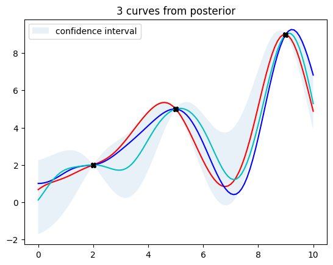
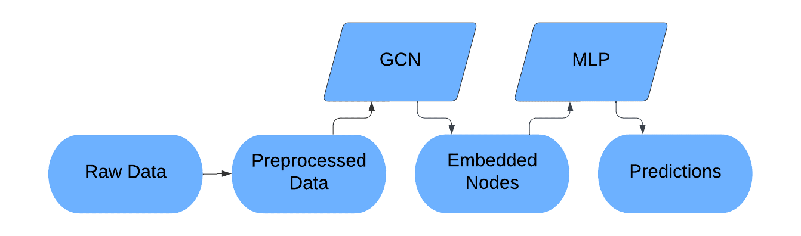

I am a recent graduate from San Jose State University with a strong interest and expertise in algorithms. Below you will find some of my work,
including my master's project headlined below. I researched the theory and applications of Gaussian Proccess Models (GPMs), and provide an intuitive
introduction to this class of models, as well as my findings which could lead to increased usefullness of GPMs.

In this project, my partner and I worked to predict writing quality based on writing process data such as key stroke patterns.
This was also part of a Kaggle competition, and we placed middle of the pack despite being limited to traditional encoding models within the
scope of our course
Bilateral Trade
Flow Prediction

I used Graph Convolutional Networks, along with Multi-Layer Perceptron, and several other regression techniques to predict the
total international trade beween pairs of nations achieving results similar to other top research.

Donec eget ex magna. Interdum et malesuada fames ac ante ipsum primis in faucibus. Pellentesque venenatis dolor imperdiet dolor mattis sagittis magna etiam.

Donec eget ex magna. Interdum et malesuada fames ac ante ipsum primis in faucibus. Pellentesque venenatis dolor imperdiet dolor mattis sagittis magna etiam.

Donec eget ex magna. Interdum et malesuada fames ac ante ipsum primis in faucibus. Pellentesque venenatis dolor imperdiet dolor mattis sagittis magna etiam.

Donec eget ex magna. Interdum et malesuada fames ac ante ipsum primis in faucibus. Pellentesque venenatis dolor imperdiet dolor mattis sagittis magna etiam.